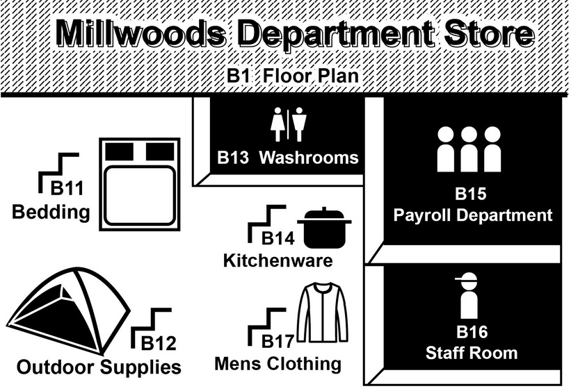

Questions 1 through 3 refer to the following short talk: 00:00 00:00 01:02 |
| Good evening. This is Terrance Phillips bringing you the local hourly weather forecast. The heat spell that we have been experiencing does not appear to be going away anytime soon. Yesterday afternoon, temperatures peaked at a record breaking 39 degrees Celsius. We may see a repeat of that today, so turn up that air conditioning, do what you need to do to stay cool, and remember to drink lots of water. We might see the heat taper off to the mid-30s by the end of the week, and then heavy showers are predicted for the weekend. In related news, the County Fair has announced that they intend to go ahead with their opening day this Saturday, rain or shine. The fair grounds will open to the general public at 9 in the morning, and everybody who arrives before noon will get free entry. In case the rains do come down, there will be large tent areas providing coverage and a variety of activities. 晚安。這是特倫斯菲利普斯為您帶來每小時的當地天氣預測。我們經歷的熱浪似乎還會持續一段時間。昨天下午，最高溫破紀錄達到攝氏39度。 今天，溫度甚至可以再達39度， 所以，請打開冷氣，讓你保持涼爽，並記住要大量喝水。這個周末以前，我們可能會看到溫度逐漸下降維持在35度左右，然後預計週末時會有陣雨來襲。另有相關消息指出，縣博方面宣布，本星期六他們依然打算開幕，風雨無阻。展覽會場將在上午九時開放給一般民眾蒞臨參觀，中午前入場民眾將可免費入場。萬一真的下雨，會場會提供大帳篷遮雨以及各種不同的活動。 |
Questions 4 through 6 refer to the following short talk:  00:00 00:00 01:09 |
| Good morning everybody. I would like to give you a few reminders before we head out onto the floor today. The news this week has been reporting that this will be the wettest summer in years, so people working in outdoor supplies should make sure that all rain gear is in full stock and that additional orders are on the way. In the bedding section, I would like to remind all of the sales staff that our new policy of not letting the customers lie down on the beds is now in effect and signs have been installed. Please make a point of reminding customers if it is necessary. Finally, I would like to mention that we apologize for the slip-ups that were made on this month's paycheck. As you probably know, Mary in the payroll department is on sick leave, and Ted, her temporarily replacement, is just getting used to the new system. If you have found any discrepancies, please make a copy of your pay stub and go speak to Ted directly, in room 202, and she will get that cash to you as soon as possible. That's about all I have to say, so have a good day everybody! 大家早安。在大家出門前，我有幾點件事情要提醒大家。本週新聞報告，今年將會是幾年來最潮濕的夏天，因此在戶外用品區工作的員工，應確保我們的雨具有足夠的庫存量，以供應額外增加的訂單。在寢具用品區的人員注意，我想提醒所有的銷售人員，我們的新政策規定，現在起不要讓顧客躺在展示床上，且我們也已安裝警告標示。如有必要請務必提醒顧客。最後，我想表示，公司對本月月薪的誤算深表歉意。如同你可能知道，薪資部門的瑪麗正在病假中，暫時代理職位的泰德，還在習慣新系統的運作。如果你發現任何的薪資差異，請影印你的薪資條，直接告訴202室的泰德，他將盡快以現金補給您。我要說的全部就這些了，因此祝大家有美好的一天！ |
Questions 7 through 9 refer to the following short talk: 00:00 00:00 01:14 |
| Thank you for calling Trans-Continent Airlines. All of our operators are busy right now. You are currently number twelve in the queue. One of our flight specialists will be with you shortly. We would like to remind you that your question may already be answered on the FAQ section of our website, www.transcontinent.com. While you wait, we would like to take the opportunity to tell you about some of our flight upcoming flight specials. Are you planning a wedding or large family holiday? Several of our partner hotels in sunny Cancun, Mexico are currently offering unheard-of discounts. For wedding groups, bring 16 people or more, and the married couple gets a room for a week, free of charge. For business travelers, we are now offering frequent-flier deals for common routes including Los Angeles to New York and New York to Chicago. Fly return 5 times in 5 months, and your sixth flight is on us! For all passengers, don't forget to sign up for your TC Air Miles card before you fly, and you can earn one point for every kilometer of travel. This even applies to our vast network of Star-Group affiliated airlines. Please continue to hold, and an operator will be with your shortly. 謝謝您來電遠洋航空公司。所有的接線專員目前皆在忙線中。您目前的等候編號為12號。我們的專員將盡快與您通話。我們想提醒您，您的問題也許可在我們網站的問與答部分找到，www.transcontinent.com。在您等待的同時，我們想藉此機會向您介紹一些我們將會推出的航班特價商品。您是否正在籌辦婚禮或家庭度假呢？幾間我們的合作酒店位於陽光明媚的坎昆，墨西哥目前推出前所未有的優惠折扣。婚禮團體，人數16人以上，新婚夫婦可享有一星期的住宿免費。對於商務旅客，我們目前推出常客優惠價，相同的航線，包括洛杉磯到紐約以及紐約到芝加哥。5個月內往返5次，第6次往返免費！對於所有的乘客，請不要忘記在出發前註冊屬於你的遠洋航空哩程卡， 每公哩的旅程，你可以得到一點 。這甚至適用於星空集團的廣大航空公司群組。請不要掛斷電話，接線專員將馬上與您通話。 |
Questions 10 through 12 refer to the following short talk: 00:00 00:00 00:57 |
| There are a few new items that I would like to present to the board of members. The first is regarding the upcoming election, and the choice of locations for voting stations. There are three potential community halls that fall within the boundaries of our district, and all of them are available for rental and how good accessibility. The last time there was a provincial election, the Norwood Community Hall was used, but if anybody has doubts about using the same hall, then we can certainly discuss the possibility of using one of the other two. The second point that requires discussion is also related to the election. There have been some new laws in the last four years regarding campaign advertising, particularly in front of houses and small businesses. We need to choose a good way of notifying the public about these changes, and also ensuring that members of our community follow the new regulations during the campaign. 我想現在向董事會委員們報告幾個新的項目。首先有關於即將舉行的選舉，還有投票場地的選擇 。我們的區域上有三種可能的社區講堂可供使用，這三個皆可以出租且交通便利。上次有個省份選舉，採用諾伍德社區會館，但如果有人對使用相同的會堂有異議，那我們當然可以再討論使用其他兩個會堂的可能性。第二點需要討論的也與選舉有關。過去四年來，有一些關於競選廣告的新定法律，特別針對住宅前及小型商業的廣告。我們需要選出一個好的方式以通知民眾這些改變，並確定我們的社區成員在選舉期間遵守新的規定。 |
Questions 13 through 15 refer to the following short talk: 00:00 00:00 01:06 |
| I would like to say thank you for choosing me for the 2009 Entrepreneur of the Year award. The other contestants were all worthy contenders, and I believe that each one of them deserves to stand up here as well. I certainly did not achieve this award alone. First and foremost, I must thank my partner and B-Print cofounder, Doug Thompson, who has been with me from the start. Next, I couldn't have done it without our spectacular design team, whose hard work has put the unique public image that we are all familiar with on the B-Print magazine. I would like to offer my thanks and praise to my beautiful wife, Linda, who was the person who implanted the idea for the publication in my head in the first place, has encouraged me to pursue my dreams, and has always been there when I needed her most. Last but not least, I would like to thank all of our readers and fans, without whom I would not be standing here today. Your continued patronage and support is our survival. 我要感謝你們選擇我贏得2009年年度企業家獎。任何一位參賽者都是可敬的競爭對手，而我相信他們每一個也都值得站在這裡。我絕對不是唯一一位得到獎項的人。首先，我必須要感謝我的合作夥伴和B印公司的合作創辦人，道格湯普森，他從一開始就一直跟著我一起工作。接下來，要感謝我們優秀的設計團隊。他們辛勤的工作將我們熟悉的B印雜誌打造獨特的公眾形象。沒有他們，就沒有我們。我還要感謝和讚揚我美麗的妻子琳達，是她首先在我的腦海中植入出版的想法。她鼓勵我去追求自己的夢想，當我需要她的時候，她一直都在那裡。最後也最重要的，我要感謝我們所有的讀者和書迷，沒有他們，我今天就不會站在這裡。你們持續的贊助與支持，是我們雜誌生存的動力。 |
Questions 16 through 18 refer to the following short talk: 00:00 00:00 01:16 |
| There has been a recent string of car robberies on the lower east side and in Clearview neighborhood. Over a dozen cars have been reported stolen in the last three nights. At the moment, no suspects have been apprehended. Police have however created a sketch of the suspect based on a few eyewitness descriptions, which you can now see on the screen. The thief is a Caucasian man in his mid to late 30s, approximately 170-180 centimeters in height, and of stocky build. He was spotted on three separate occasions wearing blue jeans, a red parka, blue baseball hat, and sporting a moustache. The majority of the robberies have taken place in the early morning, from about four to six AM. Police are asking people in the affected neighborhoods to be on guard, make sure to lock their vehicles, and to consider purchasing theft-deterring devices such as alarms and steering wheel locks. If you ever see a car theft taking place, call 911 immediately, and try to record any details of the perpetrators appearance. Do not try intervening, as the man may be armed and dangerous. 最近在克利爾維尤下東城區附近發生一連串汽車竊盜案。過去三天已經有10多輛汽車申報遺失。目前，沒有逮捕嫌疑犯。不過基於幾位目擊者的描述，警方已經有一幅嫌疑犯的素描，也就是你現在可以在螢幕上看到。小偷是個35至39歲的白人男子，身高約170-180公分、身材結實。有人看見他在三個不同的場合穿藍色牛仔褲、紅色的皮大衣、藍色棒球帽、留鬍子。大部分的劫案發生在清晨時分，大約在4點至6點之間。警方要求居住在受影響的社區的居民要保持警戒，確訂車輛上鎖，並要考慮購買防盜設備，如方向盤鎖。如果你目睹汽車竊盜發生，立即撥打 119，並試著記錄竊盜犯的外觀細節。不要試圖阻止，男子可能是具有槍械且具危險性。 |
Questions 19 through 21 refer to the following short talk: Norwood Pharmacy & Health Products
00:00 00:00 01:08 |
||||
| Do you experience cold sweats at night, nightmares, or have trouble falling asleep? If so, we have the solution for you. Sleep EZ is the first sleep-inducing product on the market that combines traditional Chinese and Native American herbal knowledge. Our experts have created a unique combination of natural ingredients that have been used for centuries in Asia and North America. Sleep EZ is available in either tea or pill form, but no matter which option suits you, both are 100% organic and chemical free. Users report no side effects whatsoever, aside from an excellent and uninterrupted night of sleep. Waking up the next morning, you will feel alert, rested, and ready for a new day. Sleep EZ is available at your local health food store, or you can call now for delivery. If you purchase a set of three boxes, we will even include a fourth one free! The set is only $39.95, plus tax and delivery. 你有夜間出冷汗、作惡夢、或失眠的經驗嗎？如果是這樣，我們有解決方法。EZ安眠錠是市面上第一顆誘導睡眠的產品，結合傳統漢方與北美原住民的草藥知識。我們的研究專家創造一種獨特的天然成分組合，這些天然成份已經在亞洲和北美洲使用了幾百年之久。EZ安眠錠可泡成茶水或以藥丸服用，但無論你適用哪一種形式，兩者皆是百分百有機且無化學成份。用戶回報除了熟睡及一覺到天明，沒有任何副作用產生。第二天早上醒來，你會感到精神抖擻、充分休息、且準備好要迎接新的一天。EZ安眠錠可在當地的健康食品商店購買，也可以打電話宅配。如果您購買一組三盒裝，我們會多送第四盒免費！一組只有39.95美元，外加稅金與宅配費用。 諾伍德藥局&健康產品
|
Questions 22 through 24 refer to the following short talk:
00:00 00:00 01:07 |
|
| Ladies and gentlemen, this is your captain speaking. Please return to your seats and fasten your seatbelts, as we are preparing for landing. All trays should be locked and chairs should be in an upright position. Please return all of your headsets to the airlines staff. Please turn off all electronic devices, including mobile phones, laptops, and MP3 players, as they may interfere with our radio signals. Please do not turn on your phones until we have landed and your have exited the aircraft into the arrival terminal. Please ensure that all of your luggage is properly stored in the overhead compartments. If you have any difficulty closing the compartment doors, please buzz one of our staff to come assist you. It is currently 15 degrees and rainy in Vancouver, so we may undergo some turbulence as we descend. Upon landing, please remain seated and do not unfasten your seatbelt until the plane has come to a complete stop. In the arrivals terminal, please follow signs for transfer or immigration and baggage. If you are unsure of where to go, please consult the staff at one of the airport information booths. Thank you. 各位女士、先生，這裡是機長報告。我們正準備著陸，請您回到座位上並繫好安全帶。所有的托盤應收好，椅子應該立起成垂直位置。請將你的耳機交還給飛航工作人員。請關閉所有的電子設備，包括行動電話、筆記本電腦以及MP3播放器，這些儀器可能會干擾我們的無線電信號。飛機著陸、你離開機艙、抵達入境航廈後，再開啟你的手機。請確保您所有的行李都安放在上方的行李廂內。如果你有關閉廂門的困難，請按鈕，機上任一位工作人員將前來協助您。溫哥華目前溫度15度有雨，因此我們下降時可能會遇到亂流。著陸後，請繼續坐在座椅上，直到飛機已經完全停止，再解開安全帶 。 在入境航廈，請遵照指示轉機或入關及提領行李。如果您不確定要去哪裡， 請於機場資訊中心洽詢工作人員。謝謝您。
|
Questions 25 through 27 refer to the following short talk: 00:00 00:00 01:16 |
| It is my honor to stand on this stage today to congratulate Sean and Lisa on this celebratory occasion. I have been colleagues with Sean for almost five years, and have seen his company transform from a small independent business run out of his parents' basement to one of the leading firms in Seattle. Before that Sean and I were roommates in University, where we partied, as well as studied very hard together. It was actually in the first year that we were living together that I first met Lisa, his new girlfriend. He had met her on campus, waiting in line for a coffee. She had only arrived to the States from Korea weeks earlier, but was an eager student and had a passion for enterprise. Sean was already familiar with Korean culture, having taught there for a year before he started his Master's. I knew right from the start that Sean and Lisa were meant to be together. They were one of those couples that everybody likes to be around, always pleasant, always poking fun of each other, and always smiling. Thirteen years later, little has changed in that regard. I thought they'd never get around to it, but finally they are tying the knot, and I am so pleased to be here with them as they begin a new phase of their life together. 我很榮幸在今天這個喜慶的日子，站在台上祝賀尚恩和麗莎。我和尚恩當同事已經五年，看著他的公司從位於他父母的地下室裡一個小型的一人公司變為西雅圖屬一屬二的公司之一。以前在大學時，尚恩和我是室友，我們一起參加派對，一起認真念書。事實上，在我們住在一起的第一年，也是我第一次遇見他那時的新女友麗莎。他在校園裡見過她排隊買咖啡。那時她剛從韓國抵達美國幾個星期。她是位求知欲旺盛的學生，且很有企業心。在尚恩攻讀碩士學位以前，他曾在韓國任教一年且很熟悉韓國的文化。我一開始就知道尚恩和麗莎註定會在一起。他們是一對人人喜愛的情侶，總是令人覺得愉悅，總是愛逗對方，總是面帶微笑。十三年後，這方面並沒有多大變化。我以為他們會永遠維持約會關係，但最終他們還是結婚了。在他們開始人生新的階段時 ，我很高興在這裡為他們倆人見證 。 |
Questions 28 through 30 refer to the following short talk: 00:00 00:00 01:03 |
| Attention all passengers. Thank you for using the Kaohsiung MRT. We would like to remind all passengers that there will be some changes in service for the World Games, which will commence next week. Daytime services will be increased, with trains departing every 2-3 minutes. Trains will also be running an hour later every night. The new World Games Station will be open on the red line, within close proximity of the Kaohsiung National Stadium, where the games will take place. Due to an increased volume in commuters, we are asking that passengers do not linger in high traffic areas or stand in any of the entrance or exit areas, particularly at the World Games Station. We also like to remind all passengers that eating, drinking, or chewing gum & betel are not permitted on the MRT. Please remember to take care of your belongings. Thank you, and have a nice day! 所有乘客請注意。感謝您搭乘高雄捷運。我們想提醒所有乘客，由於世界運動會將在下週開幕，因此我們的服務將有一些改變。日間服務的車輛班次將會增加，列車每隔2-3分鐘就有一班。 列車時間每晚也將多延長一個小時。捷運的紅線將開放新的世運站，可步行至奧運會舉行的高雄國家體育館。由於乘客量增加，我們要求乘客不要在人潮來往區域停留，或站在出入口，特別是世運站。我們也要提醒所有乘客，捷運站內不可飲食、咀嚼口香糖與檳榔。請小心隨身財物。謝謝你，祝你有個愉快的一天！ |